Dépendances, performances & bonnes pratiques
Dependencies, performance & best practices
Complément technique à la documentation v1.4.1 — couvre la v1.8.2
Moteur libvips · GIF (gifsicle) · AVIF · Coût/bénéfice réel modélisé + mesures (13 graphiques)
Document bilingue FR / EN — Extension MediaWiki — Archives de Vault-Tec
FR · Partie française ci-dessous · EN · English version follows (same content)
FR — VERSION FRANÇAISE
Ce document complète le guide d'installation et d'administration v1.4.1 ; il ne le répète pas. Il se
concentre sur quatre sujets : les nouveautés depuis la 1.4.1, l'installation des dépendances, des
benchmarks honnêtes (modèle coût/bénéfice du wiki réel + mesures), et les bonnes pratiques anti-ralentissement.
Pour la configuration générale, les pages spéciales et le dépannage, reportez-vous au guide v1.4.1 ; pour le
détail des paramètres récents, à docs/NEW_FEATURES.md et CHANGELOG.md.
| Version | Apport |
|---|---|
| 1.7.0 | Moteur d'image libvips optionnel (vitesse/mémoire à l'échelle) ; mode gros wiki
(optimizeImages.php, purgeQueue.php, UseJobQueue) ; OnDemandThumbLimit ;
portabilité des statistiques (SQLite/PostgreSQL) ; écritures atomiques. |
| 1.8.0 | Optimisation GIF sans perte via le binaire externe gifsicle
(-O3), en 1ʳᵉ passe, sûre pour l'animation (jamais de redimensionnement / d'altération des
frames / de la cadence / de la boucle). Option --format du script de rattrapage (ex.
--format=gif). Désactivé par défaut, opt-in. |
| 1.8.1 | Correctifs robustesse : resynchronisation des métadonnées MediaWiki
(img_sha1/img_size) après la 1ʳᵉ passe en place ; les GIF animés ne sont jamais
figés — sous GD (qui ne décode que la 1ʳᵉ frame) le WebP/AVIF est refusé et le GIF animé d'origine
conservé ; les GIF statiques se convertissent enfin en WebP/AVIF sous GD (images à palette). |
| exp. | AVIF expérimental (branche dédiée) : génère l'AVIF en plus du WebP et le
propose avant le WebP dans <picture>. Sonde réelle de capacité AV1 → repli propre
sur WebP si l'encodeur ne sait pas faire d'AV1. |
L'extension fonctionne avec un minimum : une bibliothèque d'image avec support WebP. Tout le reste est optionnel et n'apporte qu'un bénéfice ciblé.
| Dépendance | Rôle | Obligatoire ? |
|---|---|---|
| Imagick ou GD (avec WebP) | 1ʳᵉ passe + encodage WebP | Oui (l'une des deux) |
libvips (vips) | Moteur alternatif rapide/léger (§4) | Non — opt-in |
| gifsicle | 1ʳᵉ passe GIF sans perte (animation sûre) | Non — gain GIF |
| zopflipng | 2ᵉ passe PNG sans perte (compression max) | Non — gain disque |
| oxipng | 2ᵉ passe PNG sans perte (rapide) | Non — gain disque |
libheif+AV1 / imageavif() | AVIF expérimental | Non — expérimental |
# Debian / Ubuntu sudo apt install php-imagick # recommandé (vraie transparence/ICC, vrai WebP lossless) sudo apt install php-gd # repli, souvent déjà présent # RHEL / Alma / Rocky / Fedora sudo dnf install php-imagick php-gd sudo systemctl restart php-fpm apache2 2>/dev/null || true
Vérifiez le support WebP (sans lui, aucune génération possible) :
php -r 'echo extension_loaded("imagick")&&in_array("WEBP",Imagick::queryFormats())?"Imagick+WebP OK\n":"";'
php -r '$i=gd_info();echo !empty($i["WebP Support"])?"GD+WebP OK\n":"GD sans WebP\n";'
# Debian / Ubuntu sudo apt install gifsicle # RHEL / Alma / Rocky / Fedora (EPEL) sudo dnf install gifsicle gifsicle --version | head -1
Activation (off par défaut) : $wgVaultTecMediaOptimizerGifsicleEnabled = true; — niveau via
…GifsicleLevel (1–3, défaut 3), chemin via …GifsicleBinary. Strictement sans
perte et sûr pour l'animation : seul -O{niveau} est passé (jamais de resize / lossy / colors).
Si gifsicle manque, c'est un no-op inoffensif — la génération WebP continue.
sudo apt install zopfli # /usr/bin/zopflipng (Debian/Ubuntu) — compression max, LENT cargo install oxipng # oxipng (Rust, multi-thread, rapide) si non empaqueté
open_basedir (mutualisé/Plesk). Si PHP est restreint, un binaire dans
/usr/bin reste invisible côté web. Règle d'or : copiez le binaire dans l'arborescence
du wiki (ex. httpdocs/bin/oxipng), chmod 755, propriétaire = utilisateur PHP, puis
configurez le chemin absolu. Idem pour vips, zopflipng et gifsicle.# Debian/Ubuntu : sudo apt install libvips-tools | RHEL/Fedora : sudo dnf install vips-tools # Alpine : apk add vips-tools | macOS (dev) : brew install vips vips --version ; vips -l | grep -i webpsave
Activation : $wgVaultTecMediaOptimizerImageEngine = 'vips'; (+ …VipsBinary si
besoin). Si le binaire est inutilisable, l'extension retombe automatiquement sur Imagick/GD.
L'AVIF exige un encodeur AV1 : Imagick compilé avec libheif+AV1, PHP-GD avec imageavif(),
ou libvips avec heifsave+AV1. Beaucoup de paquets exposent heifsave pour le HEIC
sans AV1 — l'extension le détecte et sert alors le WebP. Test réel de la capacité AV1 de vips :
vips black /tmp/p.png 16 16 && vips heifsave /tmp/p.png /tmp/p.avif --compression av1 \ && echo "AV1 OK" || echo "AV1 indisponible"
Deux familles de chiffres. (A) un modèle coût/bénéfice du wiki réel, recalculé depuis des hypothèses explicites ; (B) des mesures réelles prises sur la machine de test (PHP 8.4, libvips 8.15.1, ImageMagick 6.9.12, gifsicle 1.94, zopflipng, PHP-GD ; un seul cœur). Tout est reproductible via docs/benchmarks/model.py et tests/integration/pipeline.php.
Pourquoi ce cadrage ? Une estimation antérieure confondait compression par fichier et bande passante servie. Les pages servent des miniatures (déjà petites), pas les originaux, et le WebP ajoute du disque puisqu'il s'ajoute aux originaux. Les figures séparent ces deux choses.
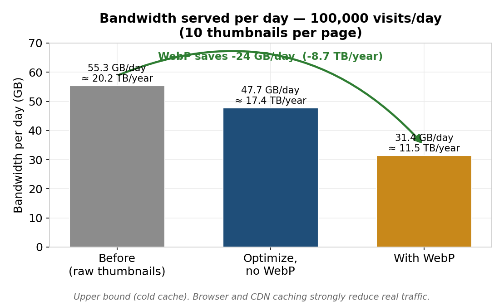
Bande passante servie par jour (borne haute, cache froid)
Au niveau des miniatures réellement servies, le WebP fait passer le trafic de ~55 à ~31 Go/jour (−43 %), soit ~8,7 To/an — en borne haute (cache froid).
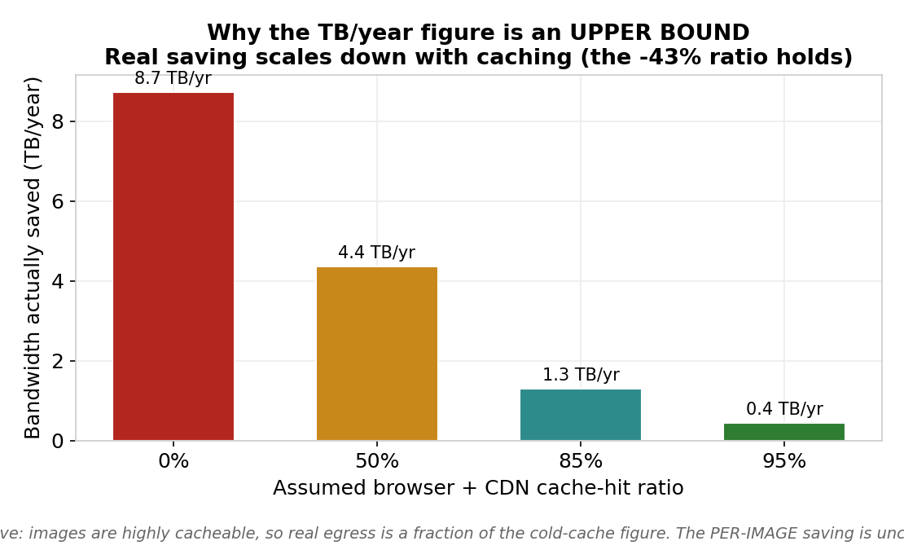
Le To/an est une borne haute : il fond avec le cache (le −43 % reste)
Le ratio −43 % est robuste ; le To/an absolu est une borne haute : les images sont très « cachables », donc avec un CDN/navigateur l'économie réelle n'est qu'une fraction de ce chiffre.
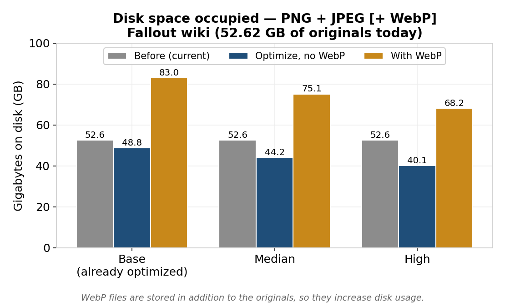
Disque occupé : avant / optimisé / avec WebP (3 scénarios)
Les WebP sont stockés en plus des originaux : le disque monte (52,6 → ~75 Go au médian). Optimiser les originaux ne reprend qu'un peu (−4 à −12 Go).
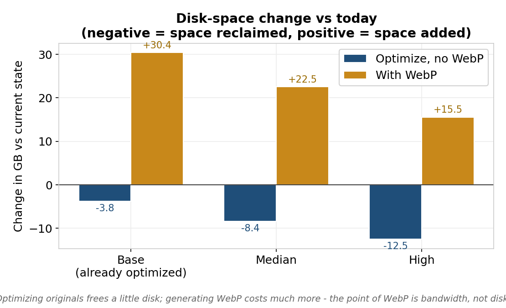
Variation de disque vs aujourd'hui (négatif = repris, positif = ajouté)
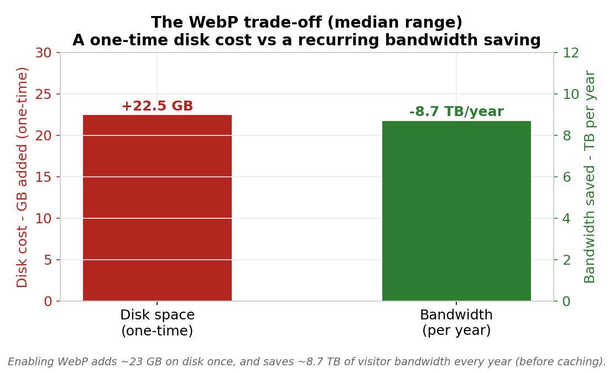
L'arbitrage : coût disque ponctuel vs économie de bande passante annuelle
L'arbitrage honnête : un coût disque ponctuel (~+22 Go au médian) contre une économie de bande passante récurrente. Le WebP est un levier de bande passante, pas de disque.
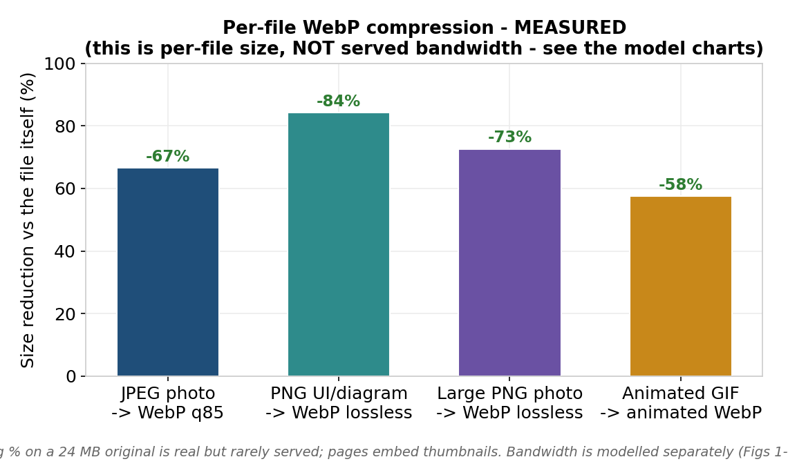
Compression WebP par catégorie (taille du fichier, PAS le trafic)
Ces gains sont réels mais portent sur le fichier lui-même : un −73 % sur un PNG de 24 Mo est spectaculaire mais rarement servi (on sert sa miniature). D'où la modélisation séparée de la bande passante (§4.2).
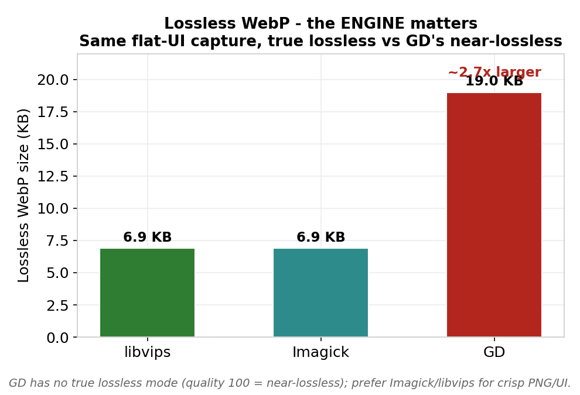
WebP sans perte : le moteur compte (GD ≈ 2,7× plus gros)
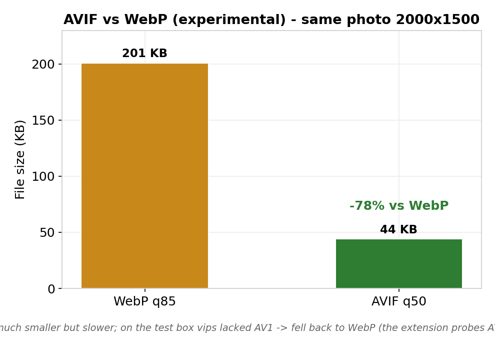
AVIF vs WebP (expérimental, même encodeur GD, qualité égale) — l'AVIF n'est pas systématiquement plus petit
Le moteur compte : GD n'a pas de vrai lossless. À qualité égale, l'AVIF n'est pas systématiquement plus petit que le WebP : cela dépend du contenu et de l'encodeur (avec GD, il ne gagne qu'en basse qualité). De plus l'encodeur AV1 manquait côté vips dans l'env de test (repli WebP automatique). D'où le statut expérimental.
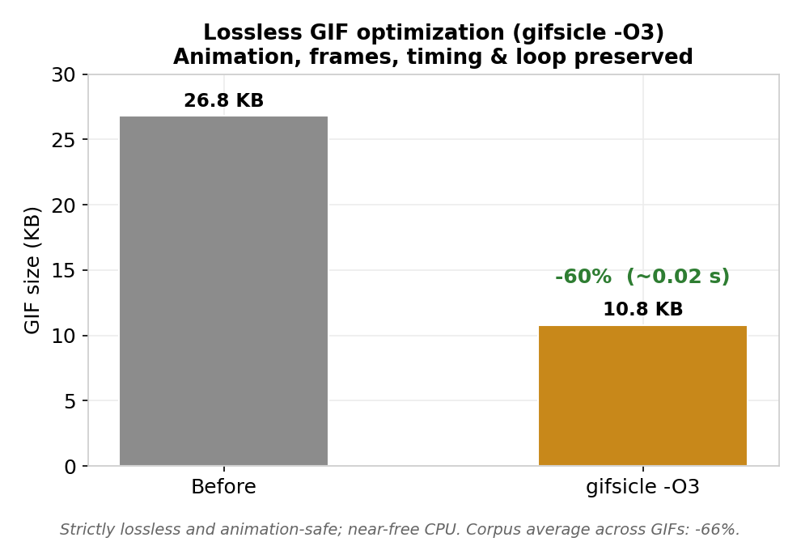
GIF sans perte (gifsicle -O3), animation préservée
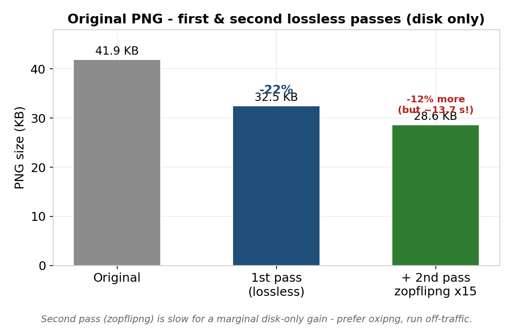
PNG original : 1ʳᵉ et 2ᵉ passe sans perte (gain disque)
gifsicle : −60 à −66 % sur les GIF, sans perte ni atteinte à l'animation, pour ~20 ms. La 2ᵉ passe PNG (zopflipng) ne grappille que ~−12 % de disque… en ~14 s : hors trafic, ou préférez oxipng.
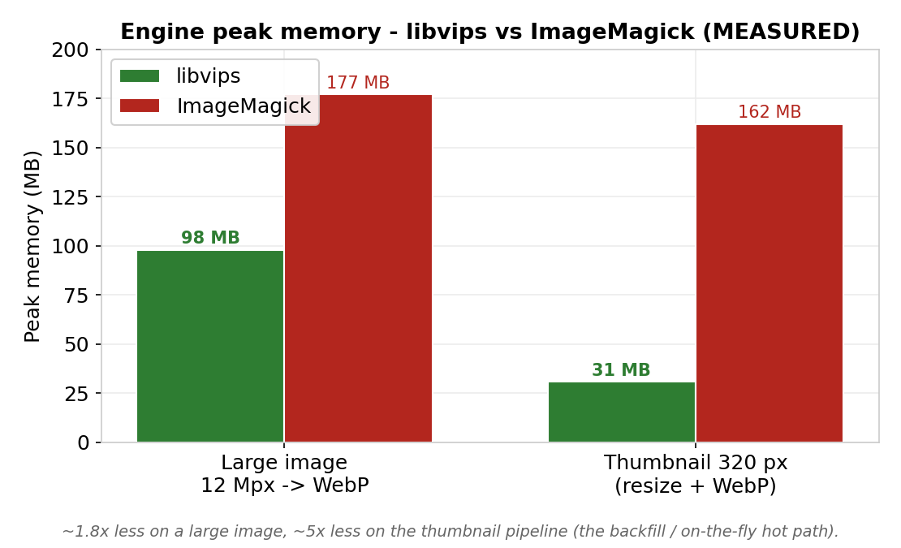
Pic mémoire : libvips vs ImageMagick (mesuré)
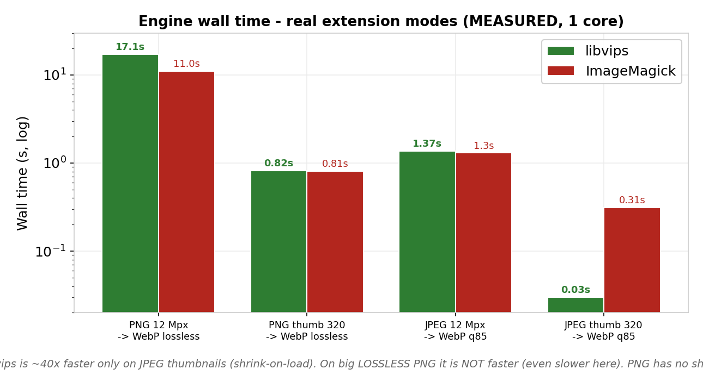
Temps : libvips vs ImageMagick (mesuré, échelle log)
Lecture honnête (mesures aux réglages réels de l'extension : PNG → WebP lossless, JPEG → q85). libvips utilise moins de mémoire partout, surtout sur les miniatures (~2,7–3,5×). Côté vitesse, l'avantage n'est pas universel : il est net sur les miniatures JPEG (~40×, grâce au shrink-on-load), mais sur un gros PNG lossless libvips n'est pas plus rapide (il est même un peu plus lent : 17 s vs 11 s), car le PNG n'a pas de décodage à échelle réduite. Bilan : vips fait surtout gagner de la mémoire (et du temps sur les miniatures JPEG).
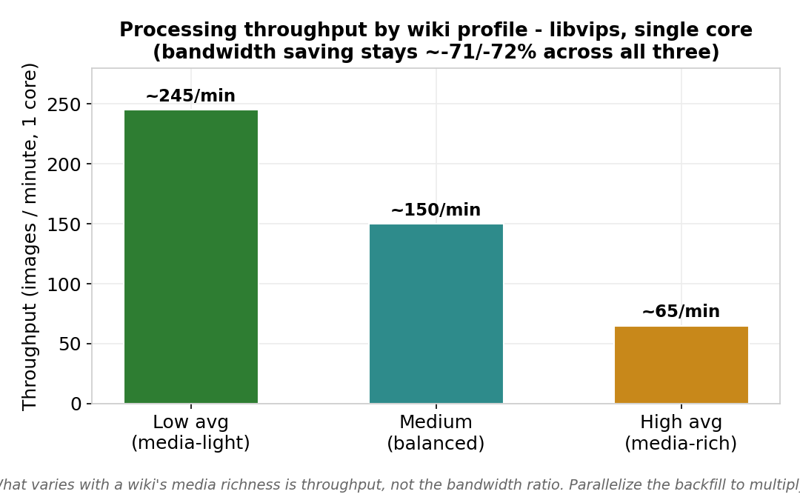
Débit par profil de wiki (libvips, un cœur)
Le débit varie selon la richesse média (~245 à ~65 images/min sur un cœur) ; le ratio de bande passante reste ~−71/−72 %. Parallélisez le backfill pour multiplier le débit.
$wgJobRunRate) : ce sont alors vos visiteurs qui « paient » l'encodage.OnDemandThumbLimit).| Option A — tout en CLI (recommandé gros wiki) | Option B — par la file, maîtrisée |
|---|---|
// LocalSettings.php $wgVaultTecMediaOptimizerUseJobQueue = false;Puis dans un screen :
php maintenance/run.php \ .../optimizeImages.php --batch=200Hors file, sans impacter les visiteurs. Reprenable ( --start), filtrable (--format=gif). |
// LocalSettings.php — 0, pas plus ! $wgJobRunRate = 0;Puis videz la file en SSH : php maintenance/run.php runJobs.php \ --type VaultTecMediaOptimizerOptimizeImageJobs résiduels : purgeQueue.php. |
$wgJobRunRate : cela aggrave le ralentissement (plus de jobs
lourds sur les requêtes visiteurs). Pour un traitement lourd, la bonne valeur est 0, combinée à un
runJobs.php en SSH — ou le script CLI dédié. Le 2ᵉ passage zopflipng des miniatures passe lui aussi par un job (depuis la 1.8.2) : même règle — traitez la file hors requête pour qu'aucun visiteur ne paie ce temps.OnDemandThumbLimit (défaut 5) : bas = premiers rendus plus légers ; 0 = tout par le backfill.gifsicle — gain franc (−66 %), coût négligeable, animation préservée.images_webp/ (et images_avif/) : levier majeur
souvent oublié pour réduire réellement la bande passante.root.
Vault-Tec Media Optimizer — complément v1.8.2. Benchmarks mesurés et pondérés sur environnement de test.
Guide complet : PDF v1.4.1 · Nouveautés : docs/NEW_FEATURES.md · Journal : CHANGELOG.md.
EN — ENGLISH VERSION
This document complements the v1.4.1 installation and administration guide; it does not repeat it. It
focuses on four topics: what's new since 1.4.1, installing the dependencies, honest benchmarks (real-wiki cost/benefit model + measurements), and best practices to avoid slowing the wiki down. For general
configuration, special pages and troubleshooting, see the v1.4.1 guide; for recent settings in detail, see
docs/NEW_FEATURES.md and CHANGELOG.md.
| Version | What it adds |
|---|---|
| 1.7.0 | Optional libvips image engine (speed/memory at scale); large-wiki mode
(optimizeImages.php, purgeQueue.php, UseJobQueue); OnDemandThumbLimit;
portable statistics (SQLite/PostgreSQL); atomic writes. |
| 1.8.0 | Lossless GIF optimization via the external gifsicle binary
(-O3), as a first pass, animation-safe (never resizes / never alters frames / timing / loop).
--format filter for the catch-up script (e.g. --format=gif). Off by default, opt-in. |
| 1.8.1 | Robustness fixes: MediaWiki metadata (img_sha1/img_size)
refreshed after the in-place first pass; animated GIFs are never frozen — under GD (which decodes only the
first frame) the WebP/AVIF is refused and the original animated GIF kept; still GIFs finally convert to WebP/AVIF
under GD (palette images). |
| exp. | Experimental AVIF (dedicated branch): generates AVIF alongside WebP and offers
it before WebP inside <picture>. Real AV1-capability probe → clean fallback to WebP when
the encoder cannot do AV1. |
The extension runs with a bare minimum: an image library with WebP support. Everything else is optional and only adds a targeted benefit.
| Dependency | Role | Required? |
|---|---|---|
| Imagick or GD (with WebP) | First pass + WebP encoding | Yes (either one) |
libvips (vips) | Fast/light alternative engine (§4) | No — opt-in |
| gifsicle | Lossless GIF first pass (animation-safe) | No — GIF gain |
| zopflipng | 2nd-pass lossless PNG (max compression) | No — disk gain |
| oxipng | 2nd-pass lossless PNG (fast) | No — disk gain |
libheif+AV1 / imageavif() | Experimental AVIF | No — experimental |
# Debian / Ubuntu sudo apt install php-imagick # recommended (true transparency/ICC, true lossless WebP) sudo apt install php-gd # fallback, often already present # RHEL / Alma / Rocky / Fedora sudo dnf install php-imagick php-gd sudo systemctl restart php-fpm apache2 2>/dev/null || true
Check WebP support (without it, no generation is possible):
php -r 'echo extension_loaded("imagick")&&in_array("WEBP",Imagick::queryFormats())?"Imagick+WebP OK\n":"";'
php -r '$i=gd_info();echo !empty($i["WebP Support"])?"GD+WebP OK\n":"GD without WebP\n";'
# Debian / Ubuntu sudo apt install gifsicle # RHEL / Alma / Rocky / Fedora (EPEL) sudo dnf install gifsicle gifsicle --version | head -1
Enable (off by default): $wgVaultTecMediaOptimizerGifsicleEnabled = true; — level via
…GifsicleLevel (1–3, default 3), path via …GifsicleBinary. Strictly lossless and
animation-safe: only -O{level} is passed (never resize / lossy / colors). If gifsicle
is missing it is a harmless no-op — WebP generation still proceeds.
sudo apt install zopfli # /usr/bin/zopflipng (Debian/Ubuntu) — max compression, SLOW cargo install oxipng # oxipng (Rust, multi-threaded, fast) when not packaged
open_basedir trap (shared hosting/Plesk). If PHP is restricted, a binary in
/usr/bin stays invisible to the web side. Golden rule: copy the binary inside the wiki
tree (e.g. httpdocs/bin/oxipng), chmod 755, owner = PHP user, then configure the
absolute path. Same for vips, zopflipng and gifsicle.# Debian/Ubuntu: sudo apt install libvips-tools | RHEL/Fedora: sudo dnf install vips-tools # Alpine: apk add vips-tools | macOS (dev): brew install vips vips --version ; vips -l | grep -i webpsave
Enable: $wgVaultTecMediaOptimizerImageEngine = 'vips'; (+ …VipsBinary if needed). If the
binary is unusable, the extension falls back automatically to Imagick/GD.
AVIF needs an AV1 encoder: Imagick built with libheif+AV1, PHP-GD with imageavif(), or
libvips with heifsave+AV1. Many packages expose heifsave for HEIC without AV1 — the
extension detects this and serves WebP instead. Real AV1-capability test for vips:
vips black /tmp/p.png 16 16 && vips heifsave /tmp/p.png /tmp/p.avif --compression av1 \ && echo "AV1 OK" || echo "AV1 unavailable"
Two families of figures. (A) a cost/benefit model of the real wiki, recomputed from explicit assumptions; (B) real measurements on the test box (PHP 8.4, libvips 8.15.1, ImageMagick 6.9.12, gifsicle 1.94, zopflipng, PHP-GD; single core). Everything is reproducible via docs/benchmarks/model.py and tests/integration/pipeline.php.
Why this framing? An earlier estimate conflated per-file compression with served bandwidth. Pages serve thumbnails (already small), not originals, and WebP adds disk since it sits alongside the originals. The figures separate the two.
Bandwidth served per day (cold-cache upper bound)
At the level of thumbnails actually served, WebP takes traffic from ~55 to ~31 GB/day (−43%), i.e. ~8.7 TB/year — as a cold-cache upper bound.
The TB/year is an upper bound: it shrinks with caching (the −43% holds)
The −43% ratio is robust; the absolute TB/year is an upper bound: images are highly cacheable, so with a CDN/browser the real saving is a fraction of that figure.
Disk occupied: before / optimized / with WebP (3 scenarios)
WebP files are stored in addition to the originals: disk goes up (52.6 → ~75 GB median). Optimizing originals only reclaims a little (−4 to −12 GB).
Disk-space change vs today (negative = reclaimed, positive = added)
The trade-off: one-time disk cost vs recurring annual bandwidth saving
The honest trade-off: a one-time disk cost (~+22 GB median) against a recurring bandwidth saving. WebP is a bandwidth lever, not a disk one.
Per-file WebP compression by category (file size, NOT traffic)
These gains are real but apply to the file itself: −73% on a 24 MB PNG is striking but rarely served (its thumbnail is). Hence the separate bandwidth model (§4.2).
Lossless WebP: the engine matters (GD ≈ 2.7× larger)
AVIF vs WebP (experimental) — smaller, but needs AV1
The engine matters: GD has no true lossless. At equal quality, AVIF is not systematically smaller than WebP: it depends on content and encoder (with GD it only wins at low quality). The AV1 encoder was also missing on the vips side in the test env (automatic WebP fallback). Hence the experimental status.
Lossless GIF (gifsicle -O3), animation preserved
Original PNG: first & second lossless passes (disk gain)
gifsicle: −60 to −66% on GIFs, lossless and animation-safe, for ~20 ms. The 2nd-pass PNG (zopflipng) only shaves ~−12% of disk… in ~14 s: off-traffic, or prefer oxipng.
Peak memory: libvips vs ImageMagick (measured)
Time: libvips vs ImageMagick (measured, log scale)
Honest reading (measured at the extension's real modes: PNG → lossless WebP, JPEG → q85). libvips uses less memory everywhere, especially on thumbnails (~2.7–3.5×). On speed the advantage is not universal: it is large on JPEG thumbnails (~40×, thanks to shrink-on-load), but on a big lossless PNG libvips is not faster (even a bit slower: 17 s vs 11 s), because PNG has no reduced-scale decode. Bottom line: vips mainly saves memory (and time on JPEG thumbnails).
Throughput by wiki profile (libvips, single core)
Throughput varies with media richness (~245 to ~65 images/min on one core); the bandwidth ratio stays ~−71/−72%. Parallelize the backfill to multiply throughput.
$wgJobRunRate): your visitors then pay for the encoding.OnDemandThumbLimit).| Option A — all CLI (recommended for large wikis) | Option B — via the queue, controlled |
|---|---|
// LocalSettings.php $wgVaultTecMediaOptimizerUseJobQueue = false;Then in a screen:
php maintenance/run.php \ .../optimizeImages.php --batch=200Off-queue, no visitor impact. Resumable ( --start), filterable (--format=gif). |
// LocalSettings.php — 0, no more! $wgJobRunRate = 0;Then drain the queue over SSH: php maintenance/run.php runJobs.php \ --type VaultTecMediaOptimizerOptimizeImageLeftover jobs: purgeQueue.php. |
$wgJobRunRate: it worsens the slowdown (more heavy jobs on
visitor requests). For heavy processing the right value is 0, combined with runJobs.php over
SSH — or the dedicated CLI script. The thumbnail zopflipng second pass also goes through a job (since 1.8.2): same rule — process the queue off-request so no visitor pays for it.OnDemandThumbLimit (default 5): low = lighter first renders; 0 = everything via the backfill.gifsicle — clear gain (−66%), negligible cost, animation preserved.images_webp/ (and images_avif/): a major, often
forgotten lever to actually cut bandwidth.root.
Vault-Tec Media Optimizer — v1.8.2 supplement. Benchmarks measured and weighted on a test environment.
Full guide: v1.4.1 PDF · What's new: docs/NEW_FEATURES.md · Changelog: CHANGELOG.md.